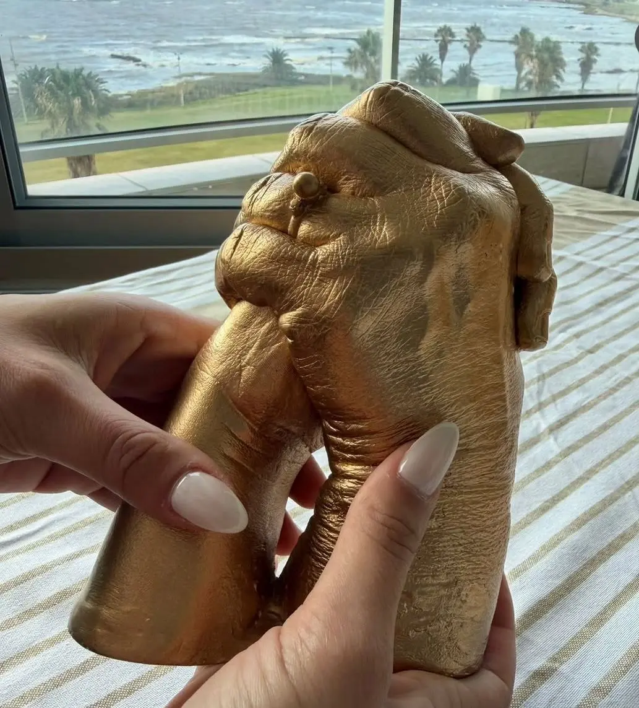

Una historia hecha de recuerdos
En Huellas creemos en el valor de los pequeños detalles. Cada pieza nace del deseo de transformar una huella, una forma o un instante en un recuerdo tangible que acompañe a una familia con el paso del tiempo.
Nuestro trabajo es completamente artesanal y personalizado. Cada creación se realiza con dedicación, cuidando materiales, composición y terminaciones para que el resultado no solo sea bello, sino también significativo.
Un proyecto que nació desde lo personal
Huellas no nació como una idea comercial, sino como una necesidad de guardar un momento. Todo comenzó con el deseo de preservar algo que el tiempo inevitablemente transforma: el tamaño de una mano, la forma de un pie, un instante que no vuelve.
Con el tiempo, ese gesto íntimo se convirtió en un proyecto que hoy acompaña a otras personas en sus propios recuerdos.
.webp)
Cada pieza es única
Detrás de cada obra hay un proceso completamente artesanal. No hay dos piezas iguales, porque cada huella, cada forma y cada historia es distinta.
El trabajo se realiza con paciencia, cuidando cada etapa: desde la toma de la huella hasta los detalles finales. La intención no es solo crear un objeto, sino construir un recuerdo que tenga valor con el paso del tiempo.
Más que una escultura
Cada pieza busca capturar algo más profundo que la forma. Es una manera de detener el tiempo por un instante y transformarlo en algo tangible.
Muchas veces, lo que se crea no es solo una obra, sino un símbolo de un momento compartido, de un vínculo, de una etapa que merece ser recordada.
.webp)
.webp)
Un trabajo hecho con dedicación
Hoy, Huellas es un espacio donde lo artesanal y lo emocional se encuentran. Cada encargo es tratado con el mismo cuidado que el primero, entendiendo que detrás de cada pedido hay una historia personal.
El objetivo sigue siendo el mismo: crear piezas que acompañen a las personas a lo largo del tiempo.